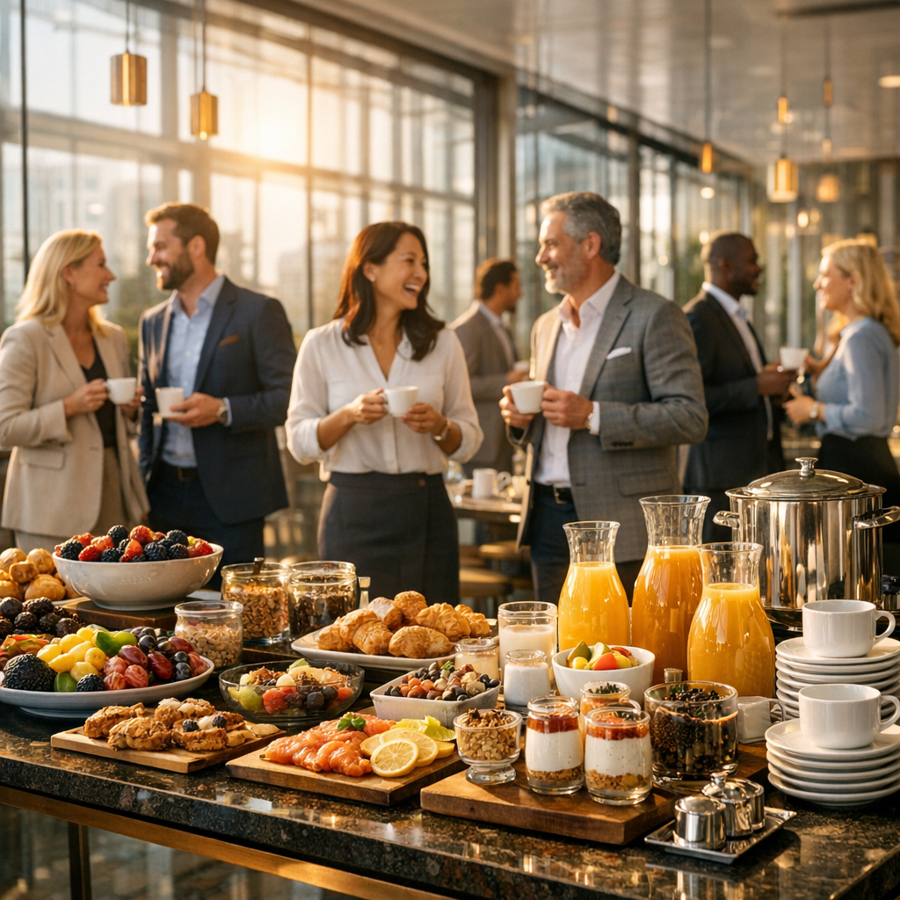
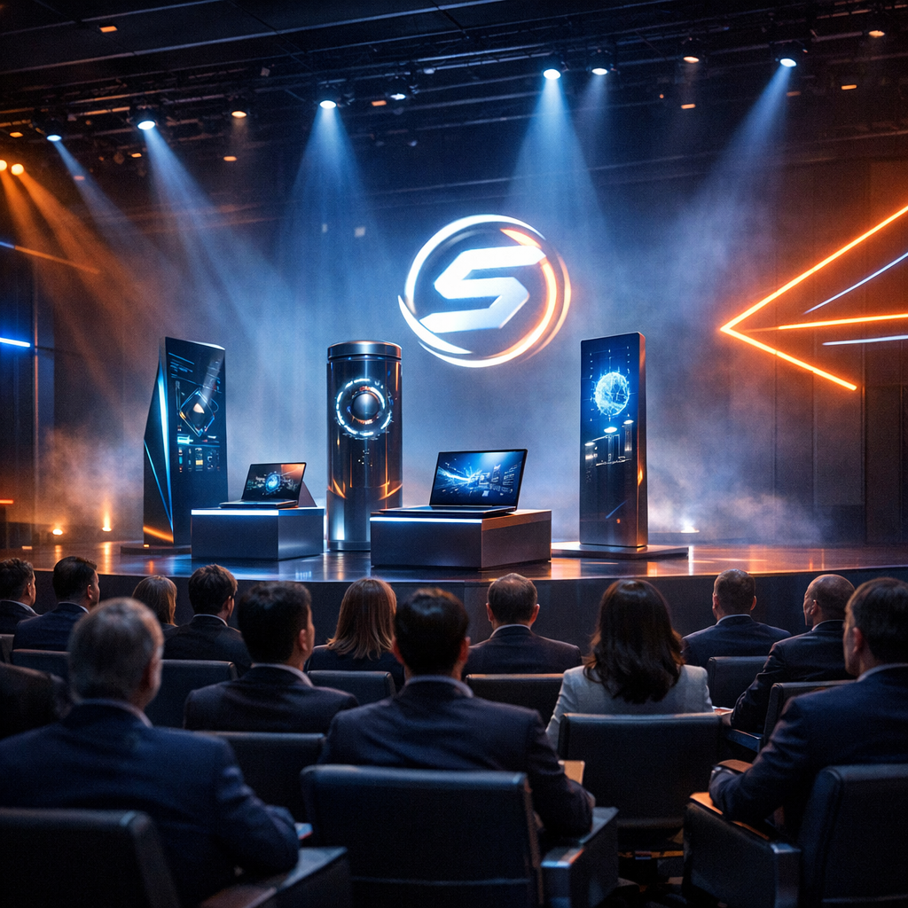

O Conceito: Café com Conexão
Mais do que um encontro, uma máquina ativa de geração de demanda, aproximação de clientes e retenção de contas-chave.
Propósito Comercial e Fidelização
O Café com Conexão foi estrategicamente estruturado para funcionar como nossa principal ferramenta de atração e blindagem de contas. Em vez de uma abordagem de vendas tradicional, criamos um ambiente que traz o cliente para o centro da nossa órbita, gerando o cenário perfeito para plantar novas vendas, consolidar parcerias de longo prazo e garantir máxima fidelidade à marca.
Alinhamento de Valor e Negócios
A Experiência Começa ao Chegar: O Poder da Usabilidade Inconsciente
O cliente já entende a usabilidade, facilidade do nosso valor tecnológico no primeiro segundo de contato físico com nossos modelos de Totens e Impressão imediata
A recepção do evento dita o tom da experiência. Com o totem de autoatendimento ágil, eliminamos as barreiras tradicionais da recepção, demonstrando na prática a velocidade e a inteligência operacional da InfinityCorp.
Busca por CPF
Check-in rápido e sem fricção para convidados pré-cadastrados.
Novo Cadastro
Entrada expressa e cadastro otimizado diretamente na hora.
Sincronização e Impressão
Comunicação contínua em tempo real e impressão da credencial.
Dashboard de Sucesso
Feedback visual imediato que avisa a recepção quem acaba de entrar.
O Café: Networking e Proximidade
Aproximando decisores e estreitando conexões sob um ambiente acolhedor.

Conexões Reais Em Um Café Especial
Engajamento Orgânico
Após passarem pelo credenciamento tecnológico, os clientes são recebidos com um banquete de café da manhã de altíssimo nível. Esse é o momento crucial de aproximação interpessoal: com nossos gerentes, vendedores e CEO que interagem de maneira descontraída, ouvindo as dores do cliente, reforçando nosso comprometimento e preparando o terreno para as apresentações de soluções.
Apresentação, Atualização e Demonstração Ativa de Portfólio
O momento da conversão. Demonstração real de hardwares, totens e notebooks para atualização dos clientes.
Demonstração Tátil e Tecnológica
Pensando em um palco, os convidados participam de uma apresentação altamente visual e interativa. Totens, notebooks e demais soluções do portfólio da InfinityCorp estão dispostos para experimentação direta. É aqui que mostramos na prática a nossa capacidade, gerando o desejo de atualização tecnológica imediata no parque de equipamentos de cada cliente ali presente.
